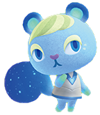

Auri
Auri disfruta de los pasatiempos comunes, tales como; la pesca y atrapar bichos, generalmente para mantenerse activa. Auri frecuentemente invitará al jugador a su casa, donde denotará sus preocupaciones por la higiene y la limpieza.